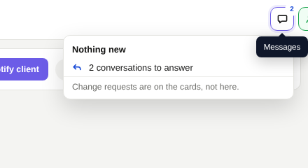
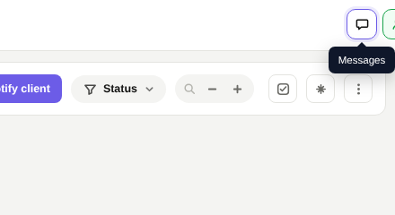
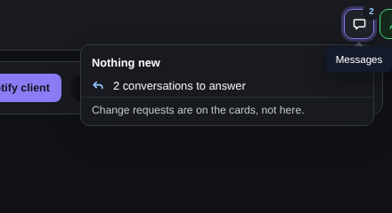
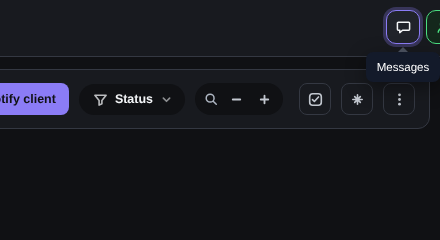
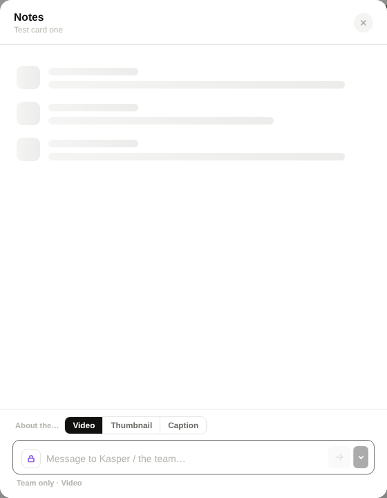
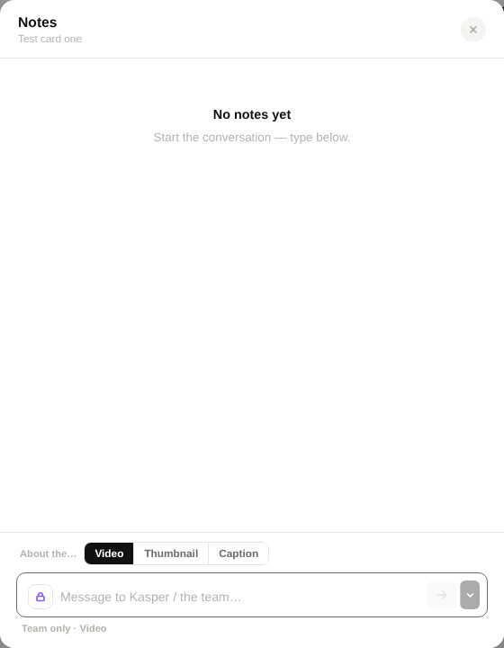
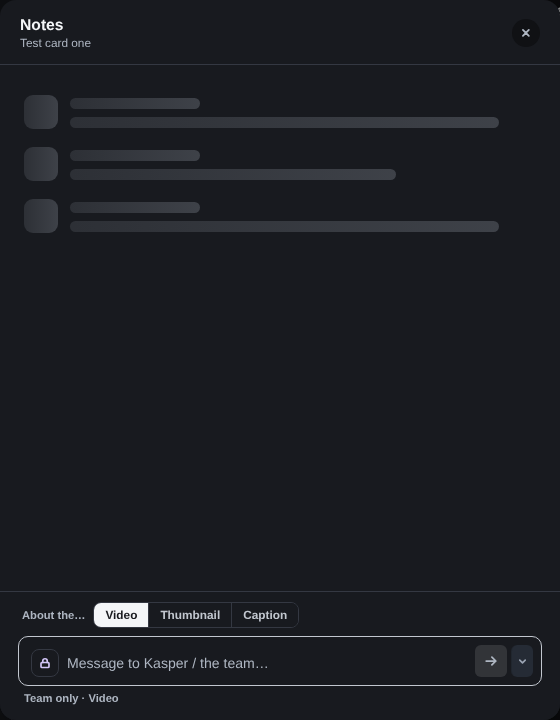
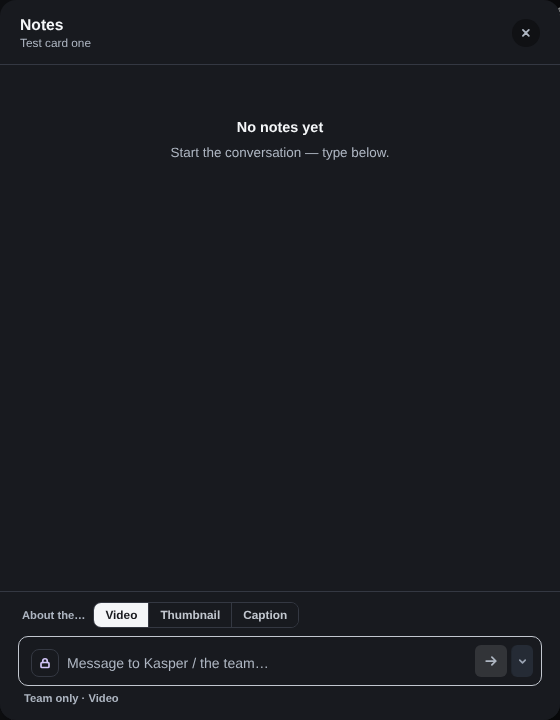

Round 9: the Messages button, faster Notes replies, no needless loading
Your three points, for your accounts first (switch unread_badges_v2). Click a picture to see it full screen.
What changed
Messages button: no box when you point at it, and its number counts only conversations with something new. Conversations waiting for your answer are on the To answer tab inside, not on the button.
Replying in Notes: the circle under a reply now goes as soon as the server has it (about 2 s became about 1.2 s; up to 4.1 s became 3 s). A reply written while Notes is still loading is taken straight away instead of being refused with "Notes are still loading".
Opening Notes: a card you have already seen opens on what it showed last time, at once; anything new is added when it arrives. The grey loading rows are only for a card seen for the first time.
Pointing at the Messages button, nothing new

Before

After

Before, dark

After, dark
Opening Notes again on a card with no notes
The first moment after the click.

Before

After

Before, dark

After, dark
Sending while Notes is still loading
Before, Send stayed grey until loading finished. After, the reply is in the thread at once and goes when loading ends.